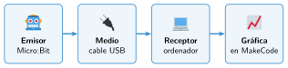

Comunicación por puerto serie
🤔 Pienso5 min
Qué hago aquí: Piensa un momento y contesta con lo que ya sabes. No pasa nada si no lo sabes: es para empezar.
Quieres saber cómo cambia la temperatura de la clase durante una hora. ¿Cómo lo harías con un termómetro y una libreta? ¿Qué problema tiene?
📖 Leo y aprendo15 min
Qué hago aquí: Lee despacio, mira los dibujos y los ejemplos, y quédate con la idea clave del final.
Comunicar es enviar información de un aparato a otro. Siempre hay tres elementos:

El puerto serie envía datos por un cable, uno detrás de otro. La Micro:Bit usa el mismo cable USB.
En la categoría Serie, el bloque serie escribir valor envía un nombre y un número. MakeCode dibuja con ellos una gráfica.
✏️ Hago25 min
Qué hago aquí: Haz las actividades en orden. Empieza siempre por las básicas.
Completa la tabla.
| Emisor | Medio | Receptor | |
|---|---|---|---|
| Llamada de teléfono | |||
| Micro:Bit y ordenador |
Copia el registro de luz. Abre los datos del dispositivo. ¿Ves la gráfica?
Tapa la placa 5 segundos y destápala. Dibuja la forma de la gráfica.
Cambia el programa para enviar la temperatura en lugar de la luz.
Envía la aceleración en el eje x. Mueve la placa de un lado a otro. ¿Cómo es la gráfica?
✏️ Puedes responder escribiendo, con un dibujo o un esquema, o contándolo en voz alta.
🚀 Amplío (si quieres saber más)
Qué hago aquí: ¿Has terminado? Lee la curiosidad o elige el reto. Es voluntario.
Registra la temperatura junto a la ventana toda la sesión, un dato cada 30 segundos. Descarga los datos y haz una gráfica en la hoja de cálculo. ¿Cuál fue la máxima y la mínima?
✅ Compruebo5 min
Qué hago aquí: Contesta sin mirar la ficha y marca cómo lo llevas.